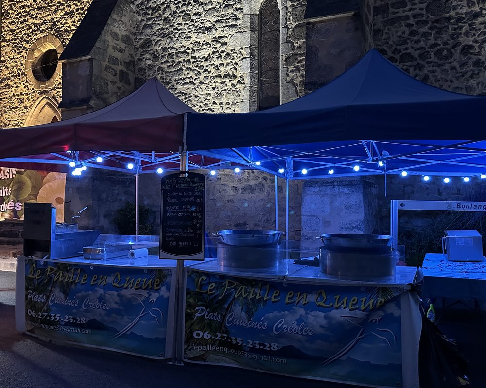

marchaque semaine
Le Pizou
À partir de 19 h
Marché nocturne d'été
Jusqu'au 31 août
Marché nocturneAccueil · Nos marchés
Depuis 2009Les marchés, c'est notre école. Karine y installe son stand depuis 2009, du marché du matin au marché nocturne d'été. Samoussas, bouchons, accras et plats du jour à emporter, sans commande préalable.
À partir de 19 h
Marché nocturne d'été
Jusqu'au 31 août
Marché nocturneÀ partir de 19 h
Marché nocturne d'été
Jusqu'au 17 août
Marché nocturneÀ partir de 19 h
La commune change chaque semaine : appelez-nous ou consultez notre page Facebook.
Marché nocturneÀ partir de 19 h
La commune change chaque semaine : appelez-nous ou consultez notre page Facebook.
Marché nocturneLes communes du vendredi et du samedi changent chaque semaine. Nous les annonçons sur notre page Facebook. En cas de doute, un appel évite le déplacement : 06 27 35 23 28.

Les incontournables sont toujours là : samoussas au thon, au porc, au poulet, au fromage ou végan, bouchons vapeur, accras de morue. À côté, le plat du jour — souvent un rougail saucisses, parfois un cari d'agneau ou des lentilles boucané, selon l'humeur et la saison.
Beaucoup de nos clients d'événement nous ont d'abord connus comme ça, un samedi matin, une barquette à la main. Si vous préparez une fête, venez nous en parler sur le stand : c'est souvent là que naissent les plus beaux repas.